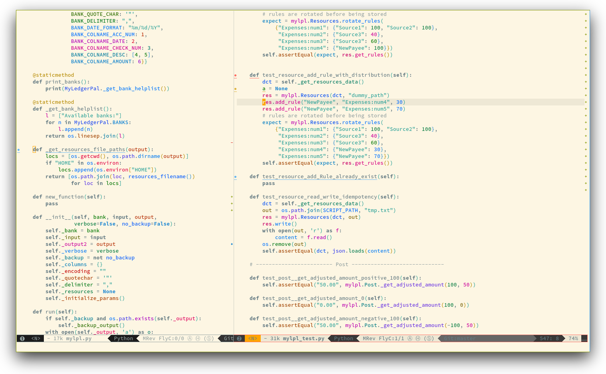

Colors contribution layer for Spacemacs
Table of ContentsClose
1 Description
This layer colors your life with:
- rainbow identifiers mode will colorize each variables and functions with an almost unique color. The keywords and the declaration of function colors are disabled in order to make the colorized variables and functions stand out.
- rainbow mode displays strings representing colors with the color they represent as background.
- nyan mode display a Nyan cat progress bar in the mode-line.
2 Install
To use this contribution add it to your ~/.spacemacs
(setq-default dotspacemacs-configuration-layers '(colors))
2.1 Enable rainbow-identifiers
To enable the package rainbow-identifiers set the variable
colors-enable-rainbow-identifiers to t:
(setq-default dotspacemacs-configuration-layers '( (colors :variables colors-enable-rainbow-identifiers t)))
Saturation and lightness of identifiers can be set per theme by adding
an entry in the variable colors-theme-identifiers-sat&light. This
is an alist where the key is a theme symbol and the value is a pair
(saturation lightness).
Example:
(push '(mytheme . (50 50)) colors-theme-identifiers-sat&light)
2.2 Enable Nyan cat
To enable the package nyan-mode set the variable
colors-enable-nyan-cat-progress-bar to t:
(setq-default dotspacemacs-configuration-layers '( (colors :variables colors-enable-nyan-cat-progress-bar t)))
It may be handy to enable it only in a GUI, you can do it by using a quasi-quoted list:
(setq-default dotspacemacs-configuration-layers =((colors :variables colors-enable-nyan-cat-progress-bar ,(display-graphic-p))))
3 Key bindings
The prefix associated with colors is C.
3.1 Rainbow Identifiers

rainbow-identifiers mode can be toggled on and off with:
<SPC> t C i
Note that the toggle is local to the current buffer.
The saturation and lightness of identifier colors can be adjusted live
with the micro-state:
| Key Binding | Description |
|---|---|
<SPC> C i s |
initiate change saturation mini-mode |
<SPC> C i l |
initiate change lightness mini-mode |
+ |
increase the saturation or lightness |
- |
decrease the saturation or lightness |
= |
reset the saturation or lightness |
Any other key |
leave the change mini-mode |
3.2 Rainbow Mode
rainbow-mode mode can be toggled on and off with:
<SPC> t C c
3.3 Nyan Mode
nyan-mode mode can be toggled on and off with:
<SPC> t m n
Note that the toggle is local to the current buffer.